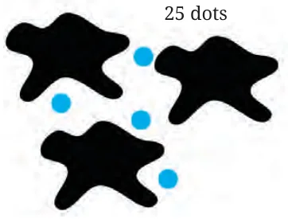
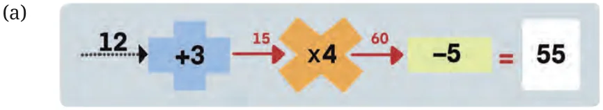
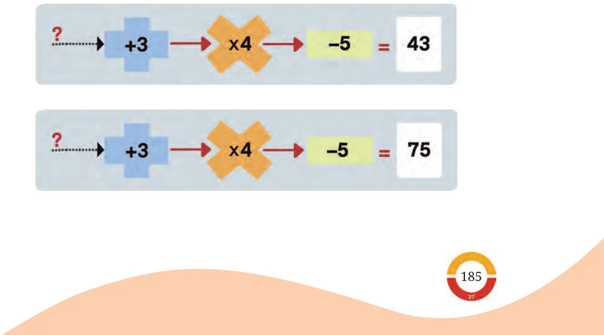
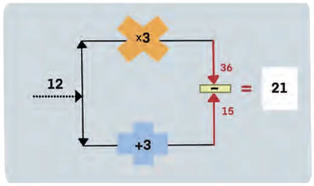
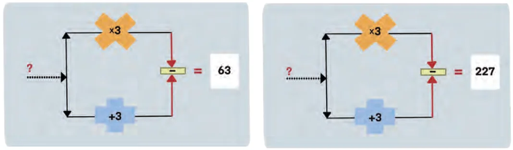
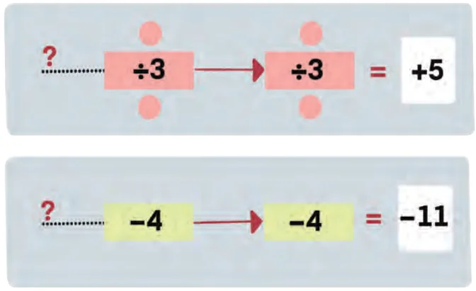
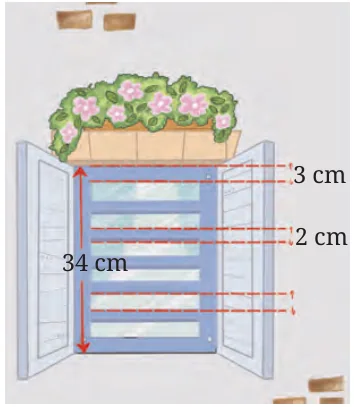
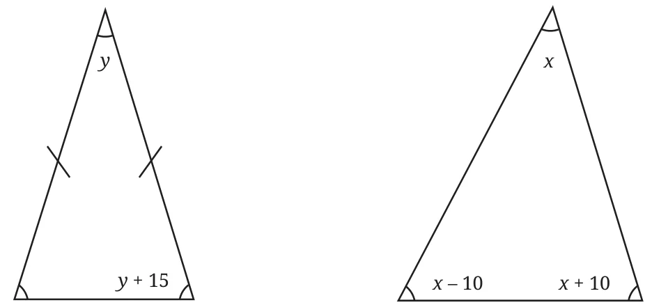
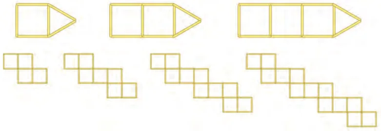
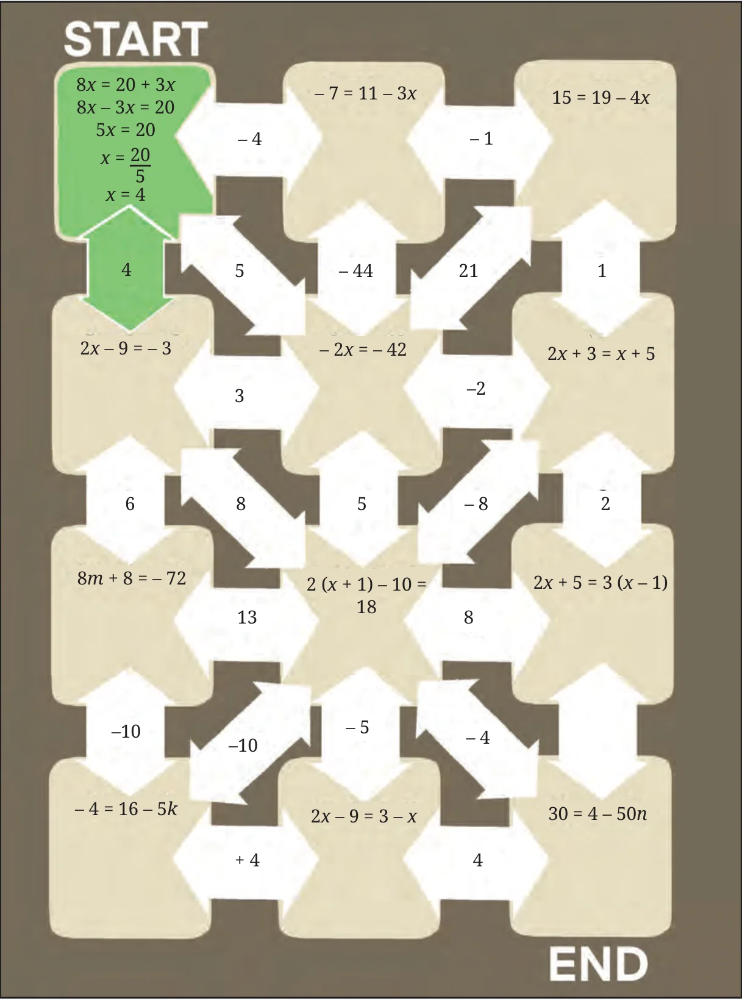

- Fill in the blanks with integers.
- \(5 \times \underline{\qquad} - 8 = 37\)
- \(37 - (33 - \underline{\qquad}) = 35\)
- \(-3 \times (-11 + \underline{\qquad}) = 45\)
- Ranju is a daily wage labourer. She earns ₹750 a day. Her employer pays her in 50 and 100 rupee notes. If Ranju gets an equal number of 50 and 100 rupee notes, how many notes of each does she have?
- In the given picture, each black blob hides an equal number of blue dots. If there are 25 dots in total, how many dots are covered by one blob? Write an equation to describe this problem.

- Here are machines that take an input, perform an operation on it and send out the result as an output.

Find the inputs in the following cases:


Find the inputs in the following cases:

- What are the inputs to these machines?

- A taxi driver charges a fixed fee of ₹800 per day plus ₹20 for each kilometer traveled. If the total cost for a taxi ride is ₹2200, determine the number of kilometres traveled.
- The sum of two numbers is 76. One number is three times the other number. What are the numbers?
- The figure shows the diagram for a window with a grill. What is the gap between two rods in the grill?

- In a restaurant, a fruit juice costs ₹15 less than a chocolate milkshake. If 4 fruit juices and 7 chocolate milkshakes cost ₹600, find the cost of the fruit juice and milkshake.
- Given \(28p - 36 = 98\), find the value of \(14p - 19\) and \(28p - 38\).
- The steps to solve three equations are shown below. Identify and correct any mistakes.
\(\cancel{6}x + 9 = \overset{11}{\cancel{66}}\)
\(x + 9 = 11\)
\(x = 11 - 9\)
\(x = 2\)
\(14y + 24 = 36\)
\(7y + 12 = 18\)
\(7y = 6\)
\(y = \dfrac{6}{7}\)
\(4x - 5 = 9x + 8\)
\(4x = 9x + 8 - 5\)
\(4x = 9x + 3\)
\(4x - 9x = 3\)
\(-5x = 3\)
\(x = \dfrac{-5}{3}\)
- Find the measures of the angles of these triangles.

- Write 4 equations whose solution is \(u = 6\).
- The Bakhśhāli Manuscript (300 CE) mentions the following problem. The amount given to the first person is not known. The second person is given twice as much as the first. The third person is given thrice as much as the second; and the fourth person four times as much as the third. The total amount distributed is 132. What is the amount given to the first person?
- The height of a giraffe is two and a half metres more than half its height. How tall is the giraffe?
- Two separate figures are given below. Each figure shows the first few positions in a sequence of arrangements made with sticks. Identify the pattern and answer the following questions for each figure:
- How many squares are in position number 11 of the sequence?
- How many sticks are needed to make the arrangement in position number 11 of the sequence?
- Can an arrangement in this sequence be made using exactly 85 sticks? If yes, which position number will it correspond to?
- Can an arrangement in this sequence be made using exactly 150 sticks? If yes, which position number will it correspond to?

- A number increased by 36 is equal to ten times itself. What is the number?
- Solve these equations:
- \(5(r + 2) = 10\)
- \(-3(u + 2) = 2(u - 1)\)
- \(2(7 - 2n) = -6\)
- \(2(x - 4) = -16\)
- \(6(x - 1) = 2(x - 1) - 4\)
- \(3 - 7s = 7 - 3s\)
- \(2x + 1 = 6 - (2x - 3)\)
- \(10 - 5x = 3(x - 4) - 2(x - 7)\)
- Solve the equations to find a path from Start to the End. Show your work in the given boxes provided and colour your path as you proceed.

Try This
There are some children and donkeys on a beach. Together they have 28 heads and 80 feet. How many donkeys are there? How many children are there?
Chapter 7 · Finding the Unknown